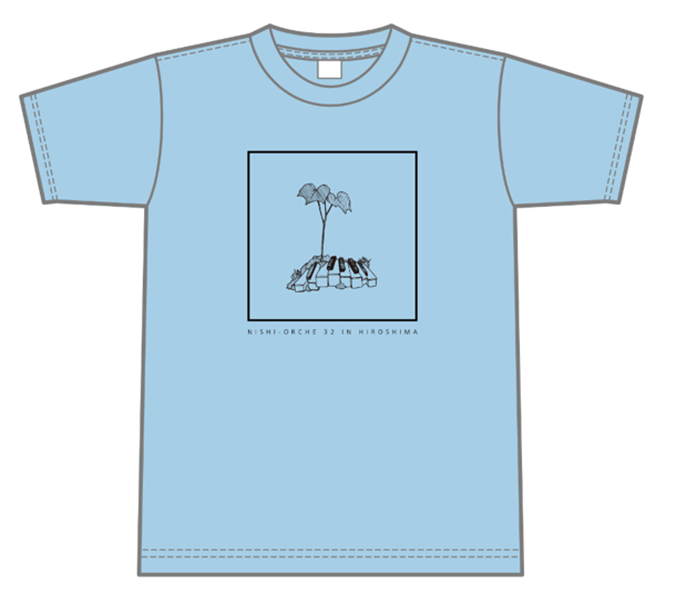
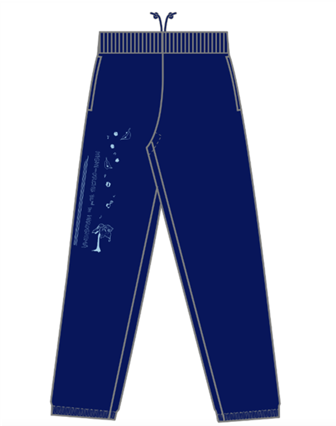

西オケ報 目次 開催概要 準備 練習 公演 打ち上げ・レセプション グッズ情報 変更受付期限・連絡先 開催概要 今回は合宿を中止とし、主管で用意したホテルに泊まっていただき、練習会場に通う形式をとります。 それに伴い当初の期間を変更させていただきます。ご了承ください。 練習・宿泊 2021年3月17日（水）~ 3月20日（土） 公演 2021年3月21（日） 宿泊地 ホテル呉竹荘 広島大手町 〒730-0051 広島市中区大手町3丁目7−3（地図） 練習会場 JMS アステールプラザ 〒730-0812 広島市中区加古町4−17（地図） 上野学園ホール 〒730-0001 広島市中区白島北町19-1（地図） 食事 以下の食事はこちらで用意します。 3月17日（水）の夜 〜 3月21（日）の朝 ページの先頭へ戻る 準備 本番衣裳（男性） ● 黒礼服上下 ● 白長袖ワイシャツ ● 黒蝶ネクタイ ● 黒靴下 ● 黒靴 本番衣裳（女性） ● 上下黒 ● 黒靴 ● 素足を出さない 合宿準備物 ● 楽器 ● 楽譜 ● 譜面台（後述） ※ホテルのアメニティについてはホームページをご覧ください。 ホテル呉竹荘 広島大手町（ページ下部の客室概要に詳細がございます） 譜面台について 今回はお一人あたり1本の持参をお願いする予定です。 感染予防の観点から、練習期間中はご自身の譜面台をご利用いただきます。 譜面台係 反納沙雪 ページの先頭へ戻る 練習 ホテルから練習会場への移動はご自身でお願いいたします。バスなどの用意はございません。 練習会場 JMS アステールプラザ 〒730-0812 広島市中区加古町４−１７（地図） 上野学園ホール 〒730-0001 広島市中区白島北町19-1（地図） ※詳細につきましては続報をお待ちください 合宿所係 藤原なつみ・脇中日向子 ページの先頭へ戻る 公演 日時 2021年3月21日（日）15:00（開場 14:30）（予定） 会場 上野学園ホール 〒730-0001 広島市中区白島北町19-1（地図） 曲目 ヴェルディ／歌劇『運命の力』序曲 ボロディン／歌劇『イーゴリ公』より韃靼人の踊り チャイコフスキー／交響曲第6番「悲愴」 ページの先頭へ戻る 打ち上げ・レセプション 今回は感染予防のため中止とさせていただきます。 打ち上げ係 西野友博 ページの先頭へ戻る グッズ情報 Tシャツ（サックス／ブラック） ¥2,500  SIZE 身丈みたけ 身巾みはば SS 62 44 S 65 47 M 68 50 L 71 53 LL 74 56 3L 77 60 ※予告なくデザインを変更する場合があります。 スウェット（ディープネイビー／ライトブルー） ¥3,700  SIZE 総丈そうたけ ウエスト 股下 WS 94 70-78 70 S 96 72-80 73 M 100 76-84 75 L 104 79-87 76 LL 108 82-90 78 3L 110 85-93 80 ※予告なくデザインを変更する場合があります。 デザイン係 光野萌 録音・映像 CD ¥3,000（予定） DVD ¥5,800（予定） Blu-ray ¥6,500（予定） ※注文数によってグッズの販売を取りやめる可能性がございます。ご了承ください。 CD・DVD係 守谷涼夏 ページの先頭へ戻る 変更受付期限 変更連絡先 第32回西オケ エントリー係 野口颯真 オプション、グッズの変更申込ほか、ご不明な点などあれば遠慮なくお問い合わせください。 ページの先頭へ戻る